富山市、高岡市で相続空き家が増えています古い家を「これから100年住める家」に再生する
「親から実家を相続したけれど、誰も住む人がいない」 ...
記事を読む →PRESIDENT'S JOURNAL
住まいとお金、土地、間取り、そして富山での暮らし。家づくりを考える皆さまへ、社長の視点から役立つ情報をお届けします。

LATEST STORIES
土地や住宅ローンの考え方から、家族に合う間取り、住んだ後の安心まで。現在公開されている記事を新しい順にご覧いただけます。
「親から実家を相続したけれど、誰も住む人がいない」 ...
記事を読む →
「住宅ローンは借金だから、できるだけ少なくしたほうがいい」 ...
記事を読む →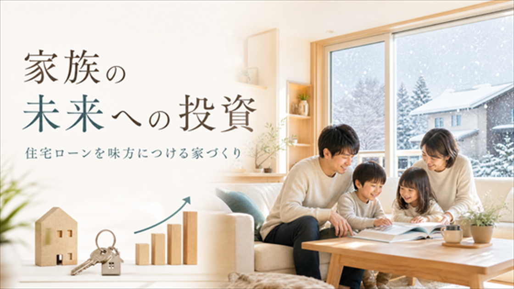
「住宅ローンは借金だから、できるだけ借りないほうがいい」 そう考えている方は多いのではないでしょうか。 確かに、住宅ロ...
記事を読む →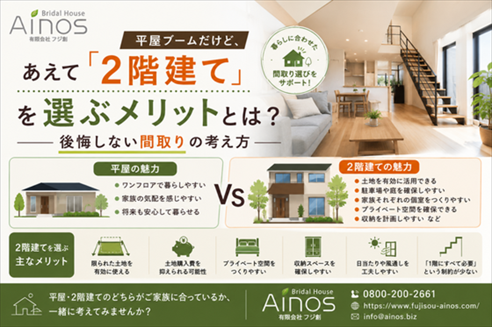
「最近は平屋が人気ですよね」 ...
記事を読む →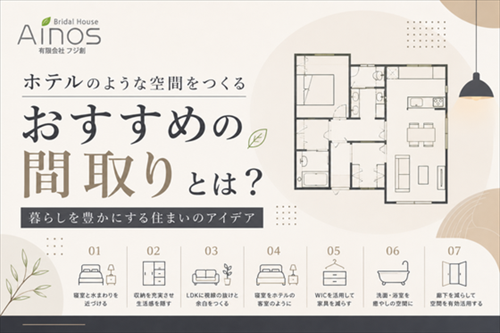
暮らしを豊かにする住まいのアイデア 「自宅にいながら、まるでホテルにいるような気分を味わいたい」 そんな住まいへの憧れ...
記事を読む →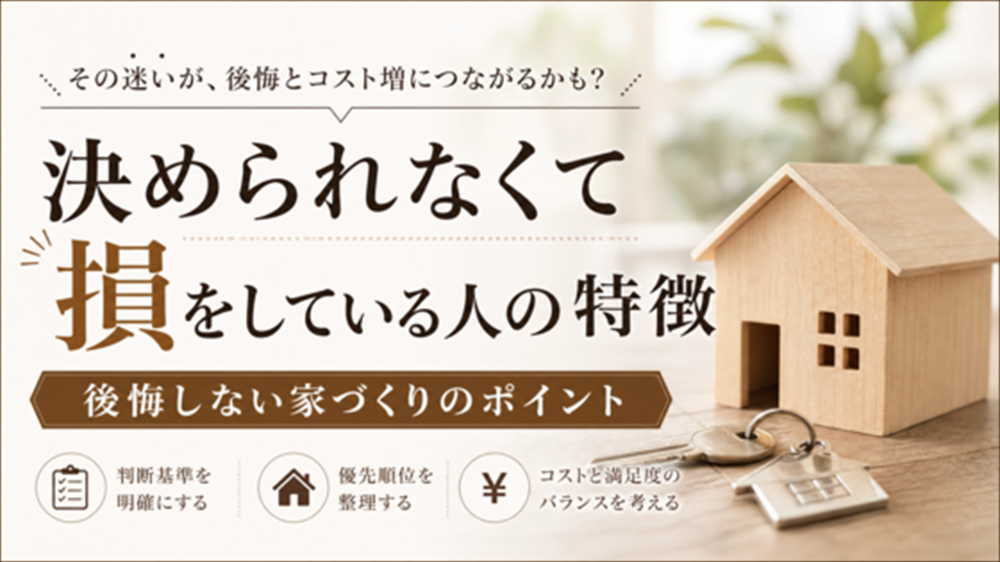
「家を建てたいけれど、どの住宅会社にすればいいのかわからない」 ...
記事を読む →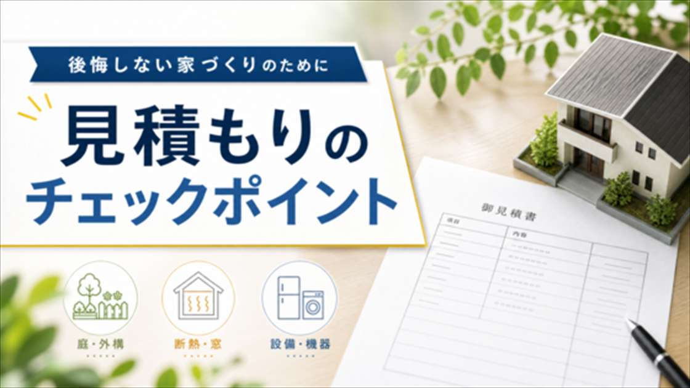
注文住宅を検討していると、複数の住宅会社から見積もりを取る機会があります。 その際、「同じ30坪くらいの家なのに500...
記事を読む →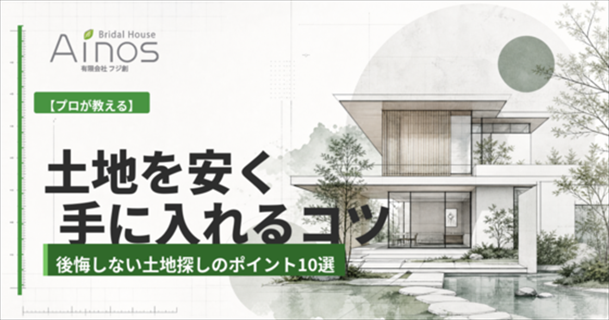
マイホームを建てる際、多くの人が最初に直面するのが「土地探し」です。 「できるだけ安く土地を購入したい」 「予算内で理想...
記事を読む →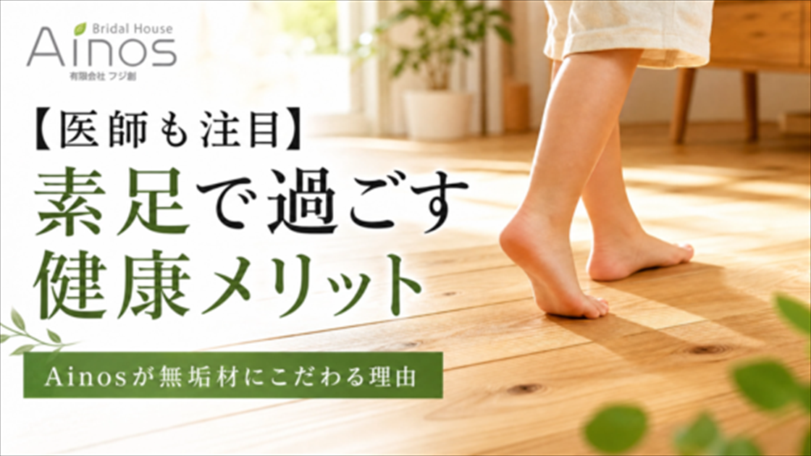
「家ではスリッパを履くのが当たり前」と思っていませんか？ 実は近年、足本来の機能を活かすために、家の中ではあえてスリッ...
記事を読む →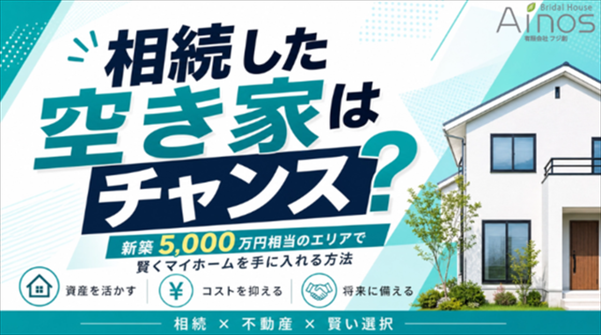
「マイホームが欲しいけれど、新築は価格が高くて手が届かない...」 そんな悩みを抱える方が増えています。 建築資材や人...
記事を読む →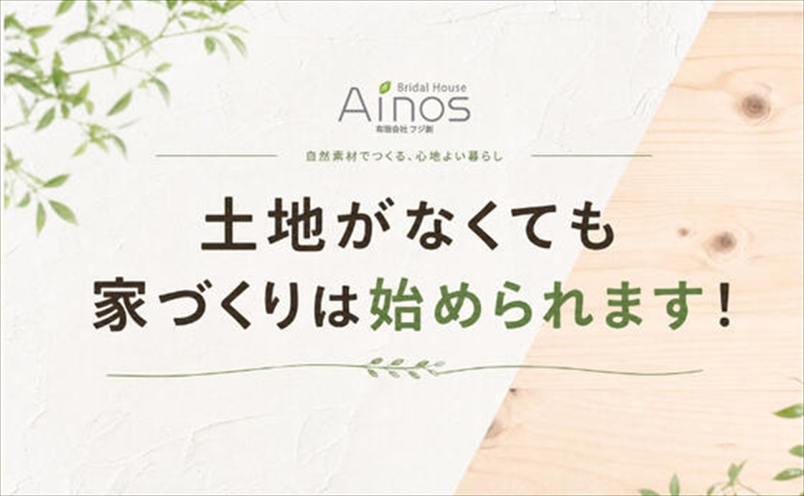
「家を建てたいけれど、まだ土地が決まっていない...」 そんな方は意外と多く、実際に家づくり...
記事を読む →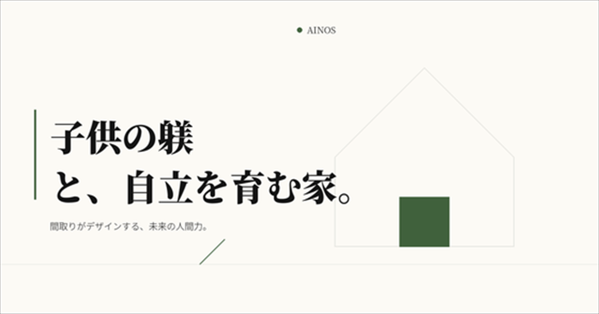
「子供には、自立した立派な大人になってほしい。」 これは多くの親が願うことではないで...
記事を読む →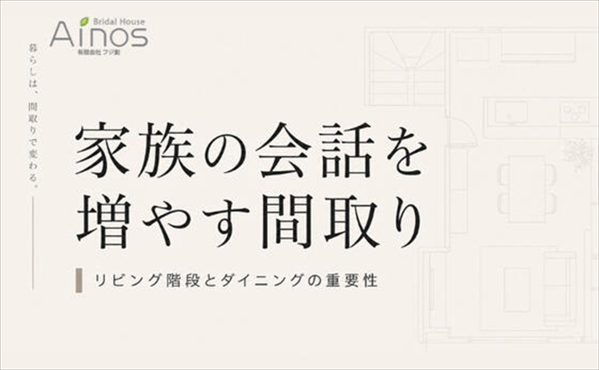
家づくりを検討している子育て世代の方なら、一度は考えたことがあるの...
記事を読む →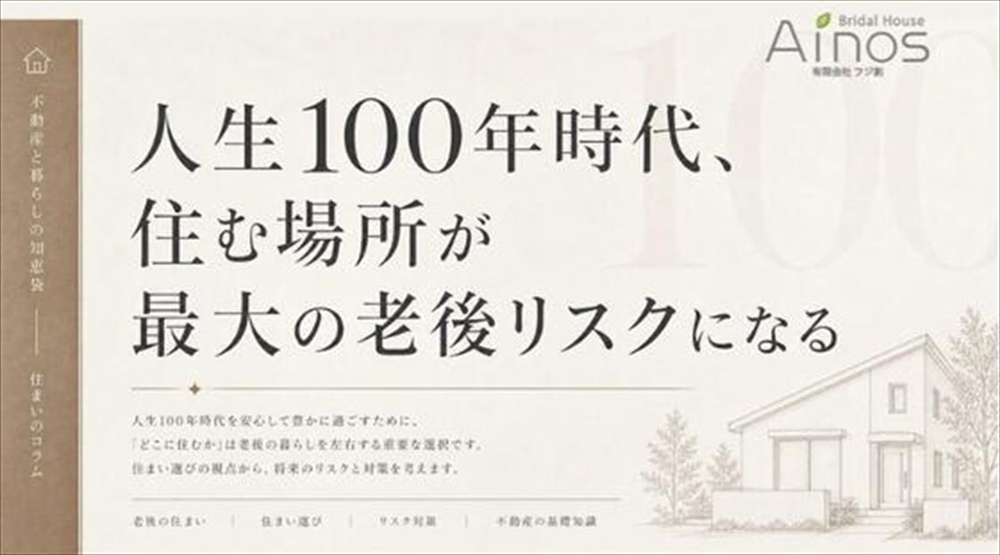
最近、テレビで「高齢者が賃貸住宅を借りにくい問題」が取り上げられていました。 日本は人生100年時代に...
記事を読む →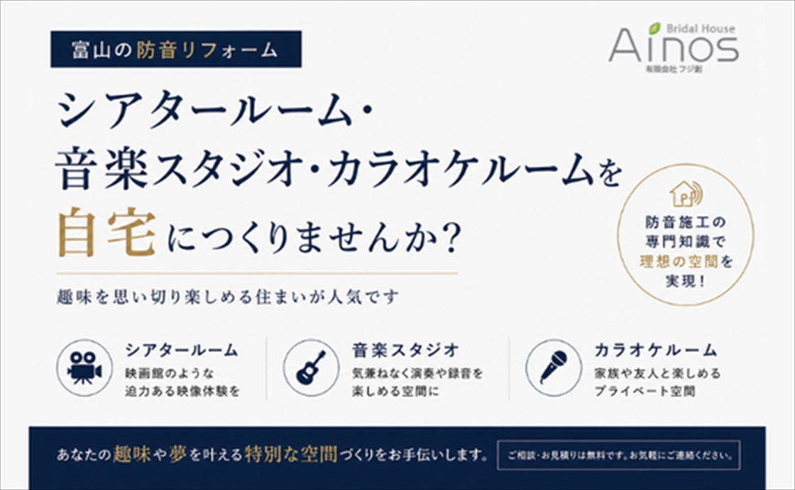
趣味を思い切り楽しめる住まいが人気です。 近年、「自宅で趣味を楽しみたい」と...
記事を読む →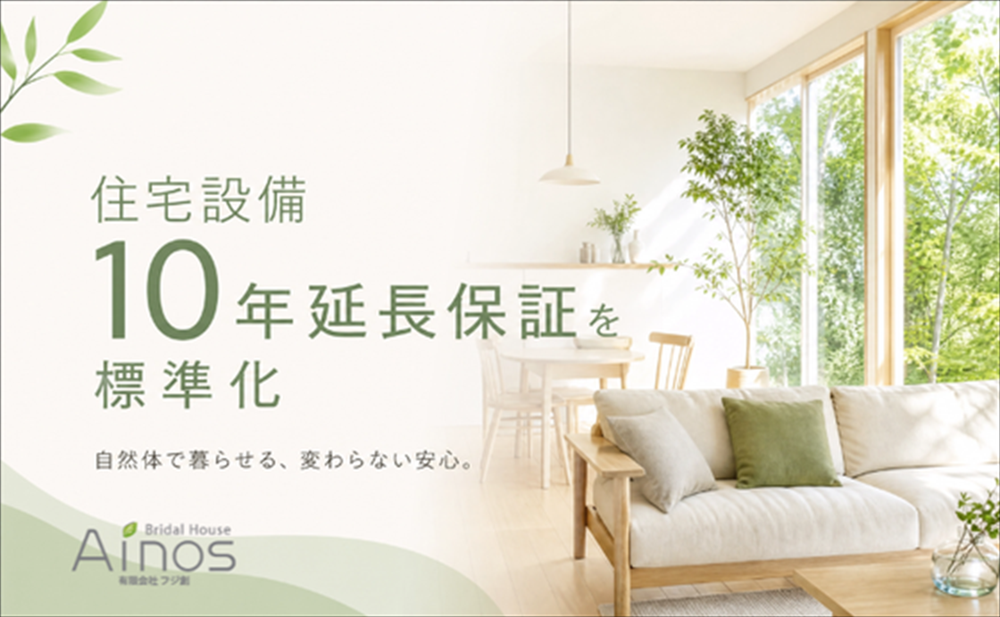
家は「建てた後」が本当に大切です。 瑕疵保証20年＋最長60年更新に加え、設備10年延長保証を全棟標準化しました。 マ...
記事を読む →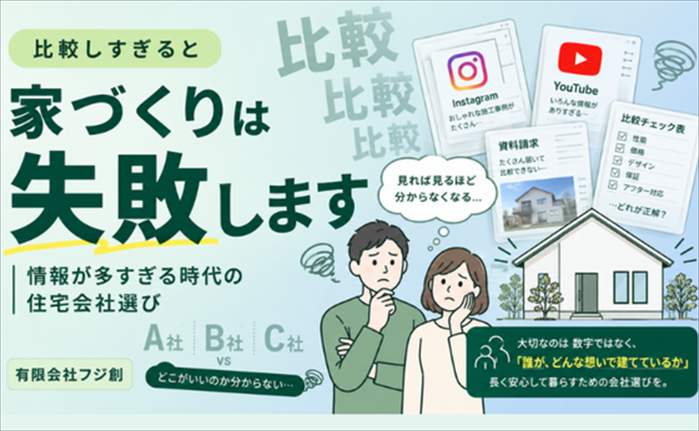
Instagramを見る YouTubeを見る 資料請求をする 展示場を回る 住宅会社を比較する 今はスマートフォン1...
記事を読む →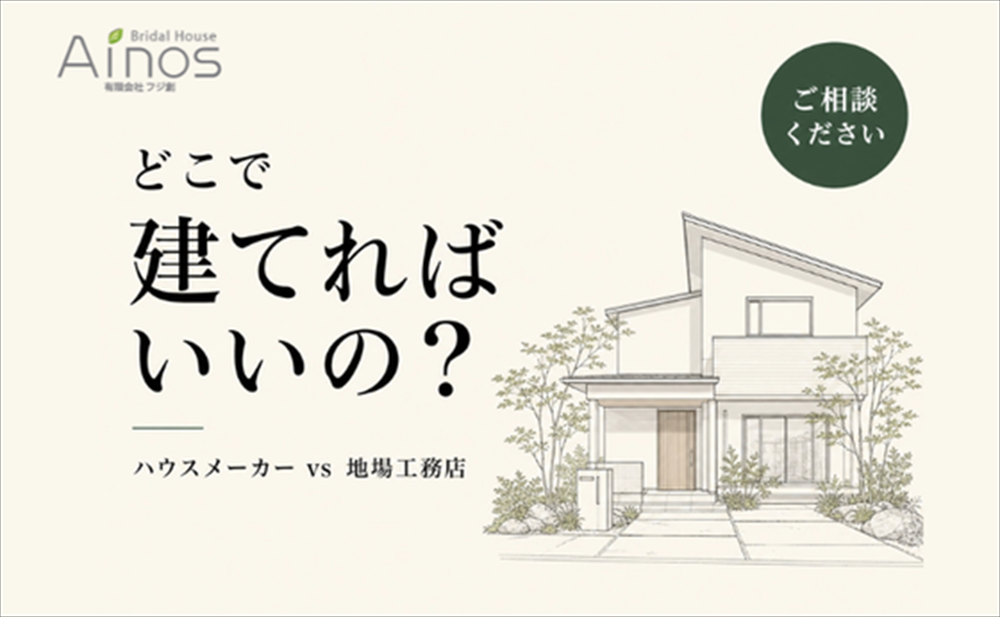
マイホームを考え始めたとき、多くの方が最初に悩むのが ...
記事を読む →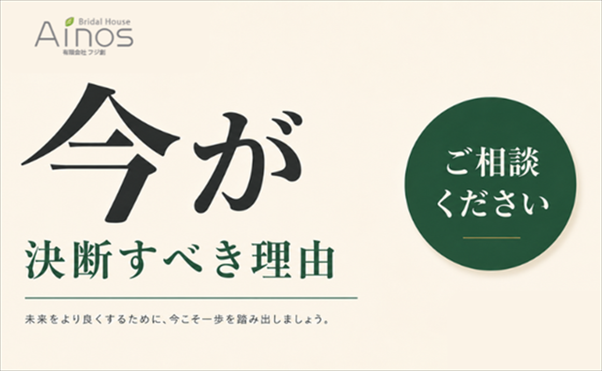
家を持ちたいと思った"その時"が、家づくりのベストタイミングです 「もう少し様子を見ようかな...」 「住宅...
記事を読む →ARCHIVE
旧サイトでは、家づくりを中心に多くの記事を公開しています。今回掲載した最新記事以外も、公式ブログで引き続きお読みいただけます。
土地、資金、間取り。まだ整理できていない段階からでも大丈夫です。